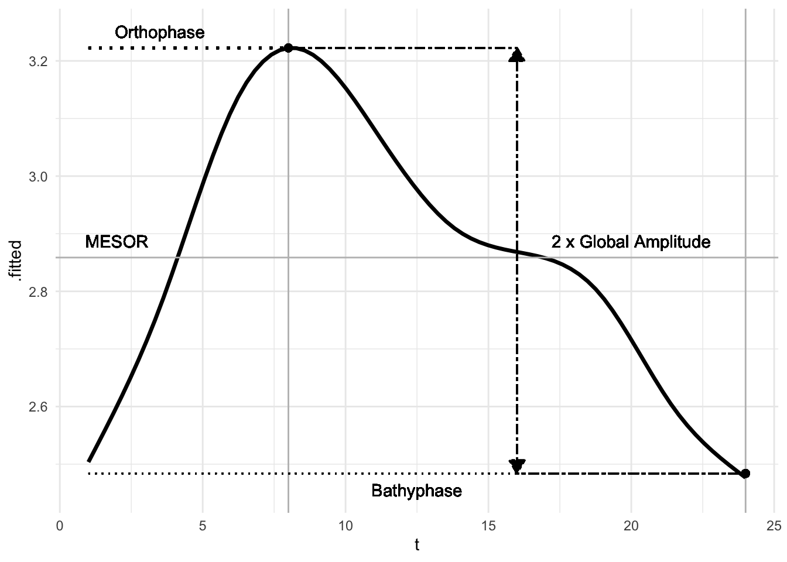

4.4 Multiple-Component Cosinor
Fitting physiological/circadian data may involve other patterns than a single, 24-hour frequency. There may be additional components or cosine waves that better explain the datasets, such as at 8 hours (e.g. meal times). Thus, it can be beneficial to add a secondary component.
Implementing this in R is made complex as it now uses a variable number of inputs and variable number of outputs. This is performed through the paradigm suggested in the hardhat package, with a user-facing and computational side. The input data is given in the function call, then bridged to the model implementation.
\[ \begin{aligned} y(t) &= M + \sum_{j}(A_{j} cos(2 \pi t / \tau_{j} + \phi_{j}) \\ y(t) &= M + \beta_{j} x_{j} + \gamma_{j} z_{j} \end{aligned} \]
Where \(j = 1,\ 2,\ ... p\), which is the number of parameters. In a single component cosinor, there are at 3 parameters: \(2(p=1) + 1\), and in a multiple component: \(2(p=j) + 1\). The components are based on the periods.
In a formula based approach…
# This is the final dataset for a single component, however we have multiple
object <- cosinor(rDYX ~ hour, data = twins, tau = c(24, 8))
cat(object$call)## cosinor(formula = rDYX ~ M + A1 * cos(2*pi*hour/24 + phi1) + A2 * cos(2*pi*hour/8 + phi2)# Periods
tau <- c(24, 8) # Two components
l <- length(tau)
j <- 2*l + 1
period <- tau
# No variable parameters
y <- outcomes <- twins$rDYX
t <- predictors <- twins$hour
n <- length(t)
# Need to create number of x values to match number of periods
# x1, x2, z1, z2 in this case
for(i in 1:l) {
assign(paste0("x", i), cos((2 * pi * t) / period[i]))
assign(paste0("z", i), sin((2 * pi * t) / period[i]))
}
# Creating a new dataframe with all variables
model <- data.frame(y, t, mget(paste0("x", 1:l)), mget(paste0("z", 1:l)))
# The formula, where the intercept will be the MESOR (not included)
f <- as.formula(
paste0("y ~ ", paste0("x", 1:l, " + ", "z", 1:l, collapse = " + "))
)
print(f)## y ~ x1 + z1 + x2 + z2# Can create a model frame here using two approaches
# Base R and with hardhat
m <- model.frame(f, model)
xmat <- model.matrix(f, m)
ymat <- as.matrix(y)
# Hardhat
framed <- hardhat::model_frame(f, model)
mat <- hardhat::model_matrix(framed$terms, framed$data)
# Solve for coefficients, including amplitude and acrophase
coefs <- solve(t(xmat) %*% xmat) %*% t(xmat) %*% ymat
mesor <- coefs[1]
for(i in 1:l) {
# Beta and gamma terms
assign(paste0("beta", i), unname(coefs[paste0("x", i),]))
assign(paste0("gamma", i), unname(coefs[paste0("z", i),]))
# Amplitude
assign(paste0("amp", i), sqrt(get(paste0("beta", i))^2 + get(paste0("gamma", i))^2))
# Phi / acrophase
sb <- sign(get(paste0("beta", i)))
sg <- sign(get(paste0("gamma", i)))
theta <- atan(abs(get(paste0("gamma", i)) / get(paste0("beta", i))))
if ((sb == 1 | sb == 0) & sg == 1) {
phi <- -theta
} else if (sb == -1 & (sg == 1 | sg == 0)) {
phi <- theta - pi
} else if ((sb == -1 | sb == 0) & sg == -1) {
phi <- -theta - pi
} else if (sb == 1 & (sg == -1 | sg == 0)) {
phi <- theta - (2 * pi)
}
assign(paste0("phi", i), phi)
}
coefs <- unlist(c(mesor = mesor, mget(paste0("amp", 1:l)), mget(paste0("phi", 1:l)), mget(paste0("beta", 1:l)), mget(paste0("gamma", 1:l))))In a multiple-component cosinor analysis, if the periods are harmonic, as in if the longest value of \(\tau\) is an integer multiple of the shortest \(\tau\) (fundamental frequency), additional features can be extracted from the fit.
- \(A_{g}\) - global amplitude, defined as half of the difference between peak and trough values
- \(\phi_{O}\) - orthophase, defined as lag time to peak value
- \(\phi_{B}\) - bathyphase, defined as lag time to trough value
This can be assessed through the fitted values in an augmented cosinor object.
# Multiple component object
object <- cosinor(rDYX ~ hour, data = twins, tau = c(24, 12))
# Retrieve parameter values and fit
aug <- augment(object)
fit <- unique(aug[c("t", ".fitted")])
mesor <- object$coefficients[1]
# Orthophase
peak <- max(fit$.fitted)
orthophase <- fit$t[which.max(fit$.fitted)]
# Bathyphase
trough <- min(fit$.fitted)
bathyphase <- fit$t[which.min(fit$.fitted)]
# Global amplitude
globalAmp <- (peak - trough) / 2
# Reference phase
zero <- min(aug$t)
# Plot
ggplot(fit, aes(x = t, y = .fitted)) +
stat_smooth(method = "gam", color = "black", se = FALSE, size = 1.2) +
# Mesor
geom_hline(yintercept = mesor, color = "grey") +
geom_text(x = zero + 1, y = mesor + 0.01*mesor, label = "MESOR") +
# Orthophase
geom_vline(xintercept = orthophase, color = "grey") +
geom_point(aes(x = orthophase, y = peak), size = 2) +
geom_segment(
aes(x = zero, xend = orthophase, y = peak, yend = peak),
linetype = "dotted", size = 0.8
) +
geom_text(
aes(x = (orthophase - zero) / 2, y = peak + 0.01*mesor),
label = "Orthophase"
) +
# Bathyphase
geom_vline(xintercept = bathyphase, color = "grey") +
geom_point(aes(x = bathyphase, y = trough), size = 2) +
geom_segment(
aes(x = zero, xend = bathyphase, y = trough, yend = trough),
linetype = "dotted", size = 0.5
) +
geom_text(
aes(x = (bathyphase + zero) / 2, y = trough - 0.01*mesor),
label = "Bathyphase"
) +
# Global Amplitude
geom_segment(
aes(x = orthophase, xend = (orthophase + bathyphase)/2, y = peak, yend = peak),
linetype = "twodash", size = 0.5
) +
geom_segment(
aes(x = bathyphase, xend = (orthophase + bathyphase)/2, y = trough, yend = trough),
linetype = "twodash", size = 0.5
) +
geom_segment(
aes(
x = (orthophase + bathyphase)/2,
xend = (orthophase + bathyphase)/2,
y = mesor,
yend = trough
),
linetype = "twodash", size = 0.5,
arrow = arrow(type = "closed", length = unit(0.03, "npc"))
) +
geom_segment(
aes(
x = (orthophase + bathyphase)/2,
xend = (orthophase + bathyphase)/2,
y = mesor,
yend = peak
),
linetype = "twodash", size = 0.5,
arrow = arrow(type = "closed", length = unit(0.03, "npc"))
) +
geom_text(
aes(x = (bathyphase + orthophase)/2 + 4, y = 1.01*mesor),
label = "2 x Global Amplitude"
) +
theme_minimal() ## `geom_smooth()` using formula 'y ~ s(x, bs = "cs")'